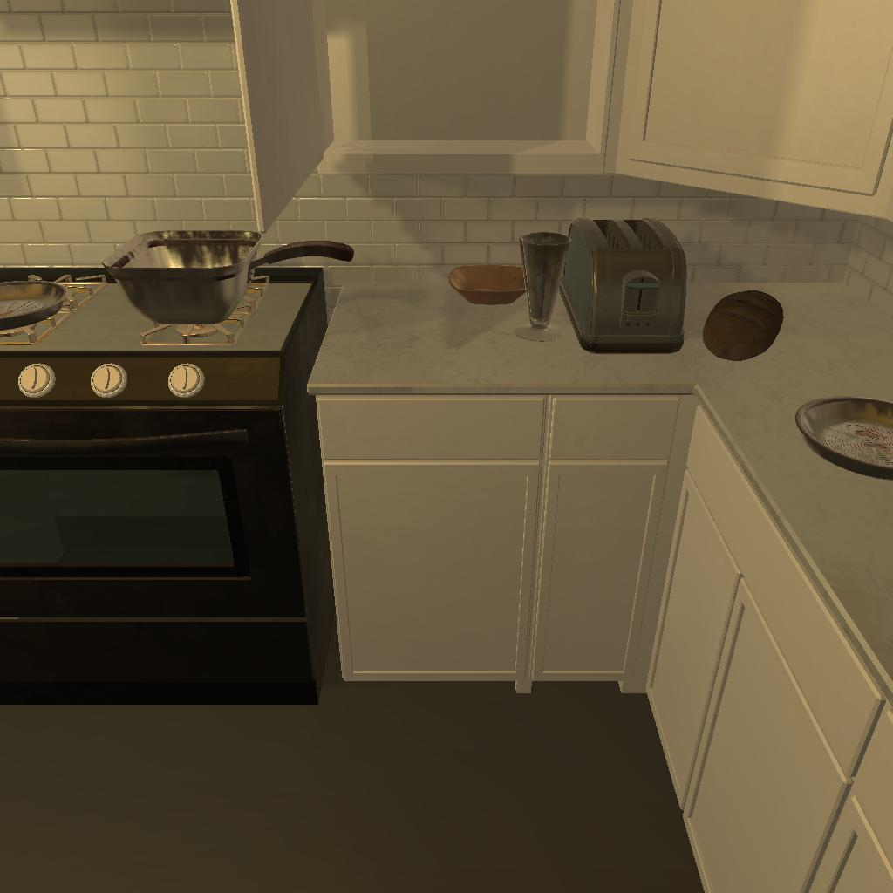

---------------------------------------------------------task: 10---------------------------------------------------------
--------------------------------------------------------------------------------------------------------------------------------------------------------------------
--------------------------------------------------------------------------------------------------------------------------------------------------------------------
Step:--------------------------------------------------------------------------6-------------------------------------------------------------------------------
----------------------------------------
VLM Prompt:
Image1:
Image2:
Image3:
**Instruction**
1. Analyze the provided images to identify all visible household objects and compare the difference between images (e.h. whether the object is opened or not and taken on hand or not), focusing on those relevant to the task description "clean some plate and put it in countertop."
2. Use the analysis of images and the task hint "The agent must find an object of the desired type, pick it up, go to a sink or a basin, clean the object with a sink or basin, and then find the correct location to place it and put it down there. The agent does not need to use soap bottle or faucet to clean the object, and the agent just needs to do action that is "clean the object with the sink or sink basin"." to answer the question: what is the most reasonable action in the choices for the task description "clean some plate and put it in countertop"?
3. Decide and write the answer using the template: The answer is: (i): , where i is the real number. If there is no desired object in images, search every place based on **Initial Observation** to find the object. And if no one is exactly correct, choose a similar answer.
**Initial Observation**
You are in the middle of a room. Looking quickly around you, you can see cabinet (1-20), toaster (1), microwave (1), garbagecan (1), countertop (1-2), drawer (1-4), stoveburner (1-4), sinkbasin (1), sink (1), fridge (1), diningtable (1), coffeemachine (1)
**Answer Choices**
(1): go to cabinet 1
(2): go to cabinet 2
(3): go to cabinet 3
(4): go to toaster 1
(5): go to cabinet 4
(6): go to cabinet 5
(7): go to microwave 1
(8): go to garbagecan 1
(9): go to countertop 1
(10): go to drawer 1
(11): go to cabinet 6
(12): go to cabinet 7
(13): go to drawer 2
(14): go to stoveburner 1
(15): go to stoveburner 2
(16): go to countertop 2
(17): go to cabinet 8
(18): go to cabinet 9
(19): go to cabinet 10
(20): go to drawer 3
(21): go to drawer 4
(22): go to stoveburner 3
(23): go to stoveburner 4
(24): go to cabinet 11
(25): go to cabinet 12
(26): go to cabinet 13
(27): go to cabinet 14
(28): go to cabinet 15
(29): go to fridge 1
(30): go to cabinet 16
(31): go to cabinet 17
(32): go to cabinet 18
(33): go to cabinet 19
(34): go to diningtable 1
(35): go to coffeemachine 1
(36): go to cabinet 20
(37): take faucet 1 from sink 1
(38): take butterknife 1 from sink 1
(39): take butterknife 2 from sink 1
(40): take lettuce 1 from sink 1
(41): examine sink 1
**Answer**
Let's think step by step by following the instructions.
----------------------------------------
----------------------------------------
Original Response:
Image Analysis:
- Image 1 shows a countertop with various objects including a toaster, pots, and a loaf of bread.
- Image 2 and Image 3 are identical, showing a sink with a faucet and what appears to be reflections of light in the basin. No plates or other objects that need cleaning are visible in the sink.
Task Analysis:
Based on the task description, the agent needs to find a plate, clean it, and place it on the countertop. Since no plates are visible in the images, the agent must search for a plate in the cabinets, drawers, or on the dining table.
Answer Choices Analysis:
- Choices (1) to (36) involve going to various cabinets, drawers, and other appliances, none of which guarantee finding a plate.
- Choices (37) to (40) involve taking objects from the sink, but none of them are plates.
- Choice (41) is to examine the sink, but this does not progress the task of finding a plate to clean.
Conclusion:
Since the images do not show a plate and the task requires finding and cleaning a plate, the most logical action would be to search the cabinets or drawers where plates are typically stored. The dining table is also a possible location where a plate might be found, especially if it has been recently used.
The answer is: (34): go to diningtable 1
----------------------------------------
----------------------------------------
>>> Refine Original VLM Response and Get Pure Action: go to diningtable 1
----------------------------------------
-----------------------------------------------------------------
Running time: 13.956251859664917 seconds
Total Money: 5.011790000000004
-----------------------------------------------------------------
-----------------------------------------------------------------
Text Observation:You arrive at loc 35. On the diningtable 1, you see a bread 2, a bowl 2, a tomato 1, a apple 1, a spatula 1, a knife 1, a peppershaker 1, a knife 2, and a spoon 1.
-----------------------------------------------------------------
UNSUCCEED